|
|
| sponges text index | photo index |
| Phylum Porifera |
| Chocolate
sponge Spheciospongia cf. vagabunda* Family Clionaidae updated Oct 2016 Where seen? This smooth lumpy sponge is particularly common on our Southern shores on muddy bottoms of lagoons near the mid-water mark. There may be a broad zone of these sponges near reefs. Features: 10-20cm wide. The smooth velvety sponge is highly variable in shape. Basically, three kinds of shapes: an irregular mass that is low and flush with the ground, usually full of little holes; or an irregular mass with many tall stout cones with holes at the tips; on an irregular mass with globular lumps attached, sometimes on a stalk. These globular lumps can break off to form new sponges elsewhere. All three form have similar internal structures (skeleton form and spicules). Colour usually a chocolate brown. Chocolate Lovers: The small smooth holes of the sponge is usually inhabited by tiny brittle stars. All you can see of them are their little arms. When submerged, a brittle star infested sponge appears furry. Sponge barnacles (Membranobalanus longirostrum) may also be found in this sponge. Possibly, the tiny spotted fans often seen on this sponge are the feeding 'feet' of these barnacles.Tiny spinoid worms may encrust the outer surface of the sponge, spacing themselves out regularly, at a distance equalling the length of their tentacles. |
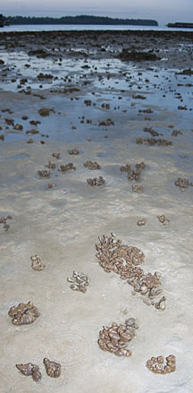 The sponge can be found over a large area. Terumbu Pempang Darat, Jun 10 |
|
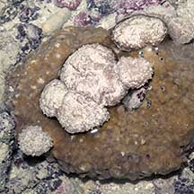 Sentosa, Aug 05 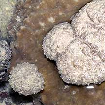 Low irregular mass with lumps growing on the sponge. |
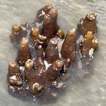 Pulau Hantu, Feb 06 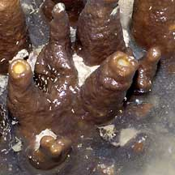 Stout cones on an irregular mass. |
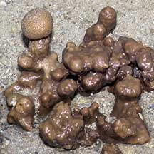 Pulau Semakau, Dec 05 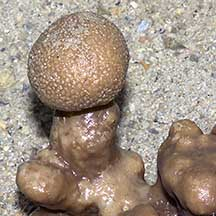 Large globular lump on a stalk. |

*Species are difficult to positively identify without close examination.
On this website, they are grouped by external features for convenience of display.
| Chocolate sponges on Singapore shores |
| Photos of Chocolate sponges for free download from wildsingapore flickr |
| Distribution in Singapore on this wildsingapore flickr map |
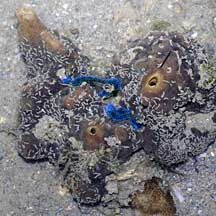 Pulau Sudong, Dec 09 |
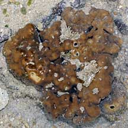 Terumbu Berkas, Jan 10 |
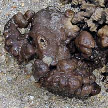 Terumbu Berkas, Jan 10 |
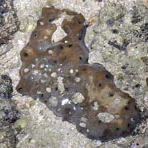 Terumbu Salu, Jan 10 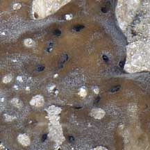 |
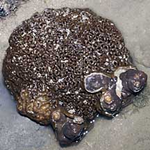 Pulau Pawai, Dec 09 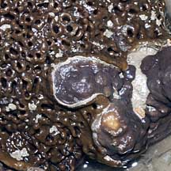 |
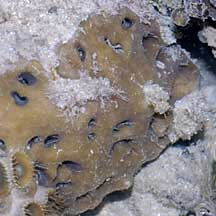 Pulau Salu, Aug 10 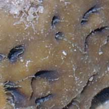 |
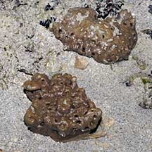 Pulau Senang, Aug 10 |
|
Links
References
|